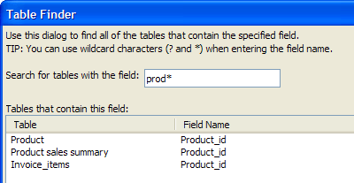

Find Tables that Contain a Field Name
This utility displays the Table Finder dialog. Use this dialog to find tables that contain named fields.
Display the Tables/Sets tab of the Control Panel.
Select Table > Utilities > Find tables that contain a specified field name... . Alternatively, right click on the white space of the window and select Utilities > Find tables that contain a specified field name... .
Enter part or all of the field name. You may use asterisk "*" to substitute for multiple adjacent characters or dollar "$" to substitute for any single character.
Select the table of interest and click OK.

See Also
TableFinder(), Find Tables that Contain a Data Value